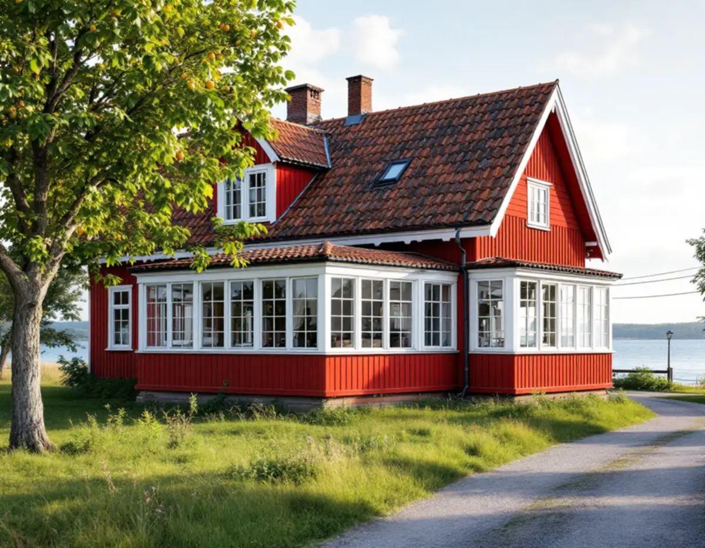
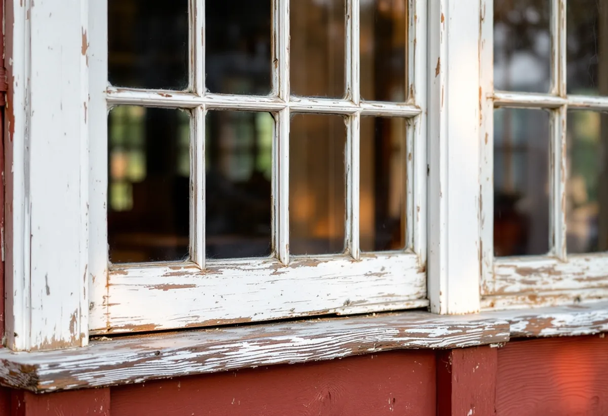
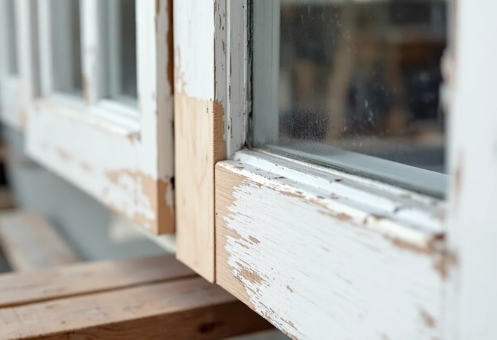

Platsbesök
Vi går igenom husets fönster och verandans glaspartier ruta för ruta.
I Barnviks by i Djurö socken har många bostadshus kvar äldre paneler, glasverandor och fönster. Geal Entreprenad AB renoverar fönster på Värmdö och tar hand om verandornas glaspartier lika noga som husets egna fönster.

Kulturmiljöprogrammet Värmdö – Kulturhistoria i skärgårdsbygd, framtaget av kommunen och Stockholms läns museum, beskriver Barnviks by som placerad på en höjdrygg längs strandkanten, med den gamla landsvägen mellan byn och de södra odlingsmarkerna. Omkring sekelskiftet 1900 bestod byn av tre gårdar och ett flertal bostadslägenheter, och i dag finns ett tiotal bevarade äldre bostadshus, flera ekonomibyggnader och uthus samt enstaka lantarbetarlägenheter.
Bebyggelsen har karaktär från sekelskiftet 1900, med sadeltak eller mansardtak av tegel, rödmålade träpaneler, i huvudsak vita foder och bevarade äldre detaljer. Mansardtak, liggtimmer och fältstensgrunder tyder enligt programmet på att flera hus uppfördes vid mitten av 1800-talet eller tidigare. Husen hade från början ett enkelt utseende men anpassades efter sekelskiftets ideal, och många har glasverandor. Programmet framhåller att bostadshusen, av vilka många fortfarande har en ursprunglig karaktär med äldre paneler, glasverandor och fönster, ger byn höga miljöskapande kvaliteter.

En glasveranda består till stor del av glasade partier, och varje ruta sitter i en egen kittfals. Riksantikvarieämbetets handbok om byggnadsmåleri skriver att det är särskilt viktigt att fönsterkittet är helt, så att fukt inte tränger in i träet och orsakar röta. Vid ommålning skrapas löst kitt bort, blottade kittfalsar grundas innan de kittas, och även ytterbågens insida ska strykas med utomhusfärg.
Länsstyrelsernas blad om fönster beskriver att vattnet som rinner på fönstrets utsida gör den nedre delen särskilt utsatt, och att rötskadorna oftast kommer i bågens och karmens bottenstycken. På en veranda tittar vi därför också på bröstningen och bottenstyckena under glaspartierna. Rötskadat virke skarvas med nytt virke av god kvalitet, så att resten av partiet kan sitta kvar. Bladet påpekar att gamla fönster är tillverkade av mycket bra virke, att det därför lönar sig att underhålla dem och att även svårt skadade fönster kan repareras med gott resultat.
Samhällsplaneringsnämnden har antagit områdesbestämmelser för Barnvik, och enligt programmet gäller därmed bland annat utökad lovplikt samt varsamhets- och skyddsbestämmelser. Värmdö kommun skriver att det i kommunen finns 14 riksintressen och omkring 55 utpekade kulturmiljöområden som alla räknas som särskilt värdefulla, och att fönster och dörrar hör till det man särskilt ska tänka på när något ändras i en kulturmiljö.
Kommunen skriver också att underhåll av en byggnad som är skyddad i detaljplan eller har särskilt bevarandevärde kräver anmälan och startbesked. Om det gäller ditt hus tar vi med det i planeringen, och kommunantikvarien kan ge råd innan arbetet börjar. Programmets genomgång av plan- och bygglagen påpekar att en byggnad ska underhållas så att utformningen och de tekniska egenskaperna bevaras, och att en särskilt värdefull byggnad ska underhållas så att de särskilda värdena bevaras.
Två välbevarade sommarvillor från tiden kring förra sekelskiftet ligger i anslutning till byn, och under 1900-talets andra hälft byggdes fritidshus och nya permanentbostäder intill den. Programmet beskriver villorna som exempel på hur äldre byars marker kom att bebyggas när skärgården blev ett eftertraktat semesterparadis.
Den som bara bor i huset på somrarna kan ändå få rotavdrag: Skatteverket godkänner arbete i ett fritidshus du äger, men inte om någon annan bor där permanent. Ett renoverat fönster behåller husets utseende, medan ett nytt fönster i ett område med utökad lovplikt kan kräva lov – kommunen skriver att lovplikt gäller inom kulturhistoriskt värdefulla områden. Om Gustavsbergs fönster och lov för nya fönster kan du läsa under fönsterbyte på Värmdö, och om panel och färg under fasadmålning på Värmdö.

Vi går igenom husets fönster och verandans glaspartier ruta för ruta.
Vi kontrollerar vad områdesbestämmelserna kräver och om anmälan behövs.
Huset och verandan redovisas var för sig.
Löst kitt tas bort, falsarna grundas och skadade bottenstycken skarvas.
Bågarna målas i husets kulör, även ytterbågens insida.
Vi går runt huset och verandan med dig när arbetet är klart.
Skatteverket räknar reparation och målning av fönster i ett småhus som rotarbete, och det gäller även ett fritidshus som du äger. Att glasa in balkonger och altaner finns också bland de godkända glasarbetena, medan glasarbete i företagets egna lokaler inte ger avdrag.
Avdraget är högst 30 procent av arbetskostnaden, högst 50 000 kr per person och år och högst 75 000 kr tillsammans med rutavdrag. Det är bara arbetskostnaden som ger avdrag. Vi drar avdraget direkt på fakturan.
Antalet fönster och verandapartier, hur många rutor som behöver kittas om, hur mycket virke som ska skarvas och vad områdesbestämmelserna kräver påverkar mest. Efter ett gratis platsbesök får du ett skriftligt kostnadsförslag.
Byta eller renovera fönster.
Fönsterbyte i Stockholm →Takbyte, takbesiktning och plåtarbeten.
Takläggare på Värmdö →Skärgård, vind och fritidshus.
Takrenovering på Värmdö →Fritidsområden, kulturmiljö och avlopp.
Attefallshus på Värmdö →Brunnsvatten, salt och eget avlopp.
Badrumsrenovering på Värmdö →Byggrätt, PFO-områden och strandskydd.
Byggföretag på Värmdö →Röd panel, vita snickerier och båthus i skärgårdsbyarna.
Fasadmålning på Värmdö →Sommarvillor, skyddade hus och helårsboende.
Fasadrenovering på Värmdö →Gustavsbergs bevarandevärda fönster.
Fönsterbyte på Värmdö →Fritidshus som blir permanentbostäder.
Golvläggare på Värmdö →Fritidshus, eget avlopp och Gustavsberg.
Köksrenovering på Värmdö →Skärgårdshus, fritidshus och bruksmiljö på Värmdö.
Målare på Värmdö →Plåttak och beslag på Värmdö.
Plåtslagare på Värmdö →Fritidshus som blir helårshus.
Snickare på Värmdö →Anmälan, kulturmiljö och tak i skärgårdsbyarna.
Takbyte på Värmdö →Fritidshusplaner och lovfria 30 m².
Tillbyggnad på Värmdö →VVS, varmvattnet och byggreglerna.
Totalrenovering på Värmdö →